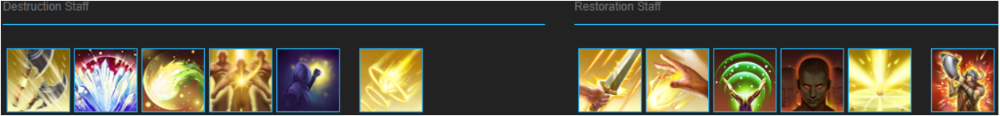

Welcome to our ESO Stamina Templar DPS Build called The Harvester. On this page you will find an updated guide on the class, gear, champion points and everything you need to know for Stamina Templar DPS.
Table of Contents
Objective
This build will be aimed at helping players ease into a Healer role with the Templar class, discussing beginner and advanced tactics to meld you into a commodity that every player wants. Good healers are rare to come by, due to misconceptions of what the role is really about and the importance they bring to high performance play. Expect a lot of insight on how to become the life bringer and enabler that can make or break a group from completing the hardest content in the game. Keep in mind that this is not a leveling guide, we’ll only be focused on the level 50, or “end game” perspective. If you’re looking for a template of Templar leveling, take a peek at this link!
Should You Play This Build?
+ The Templar’s kit feels like it was made to heal, some of the best support in the game
+ Enables the group in more ways than one; healing, resource management, and group enabling via buffs/debuffs
+ High floor (easy to play) with plenty of room to reach an even higher ceiling (good mastery)
– Has seen some major group utility nerfs since Morrowind (still arguably the best healers for PvE though!)
This build is designed to help players ease into the Stamina Templar role from a PvE DPS perspective.
SKILLS

SDual Wield Bar | Main Damage Bar
- Puncturing Sweeps (AoE Channeled Damage + Heal | morph of Puncturing Strikes) – The offensive centerpiece of Templars, for very good reasons. Remember that the focus of a good healer is to participate in damage, and this is the main way we do so. Not only does it do great damage in AoE or single target, but it also heals us and grants us passive bonuses from our skill line that grant us bonus damage AND healing when critically striking.
- Blockade of Elements (AoE DoT | morph of Wall of Elements) – Another amazing offensive ability that scales multiplicatively based on how many mobs are sitting inside of it. Place this every 8 seconds to really help melt through dungeons. This will also set enemies who are concussed, Off-Balance. This is INSANE for enabling group DPS. Pair it with a Maelstrom staff too for some extra damage.
- Elemental Drain (Debuff | morph of Weakness to Elements) – A wonderful skill that applies Major Breach to a target for ~25 seconds, at no cost! It also applies Minor Magickasteal to them, making it when any time you or an ally damages the target, they gain 300 Magicka (up to once per second). This helps the group’s damage and sustain tremendously, making it vital to run. It can be placed on an infinite amount of targets, from a range, for free. It also can be preemptively applied without aggroing enemies.
- Purifying Light (Single Target Direct Damage | HoT | morph of Backlash) – A very unique skill that operates similarly to a DoT, but isn’t one. It can be placed on an infinite amount of targets and begins recording how much damage that mob takes while this is on them. After 6 seconds it explodes based on how much damage they took while it was active, and then also places a pool of light that heals allies when standing in it. The main reason we slot this is for our Dawn’s Wrath passives for more ultimate.
- Purifying Light (Single Target Direct Damage | HoT | morph of Backlash) – A very unique skill that operates similarly to a DoT, but isn’t one. It can be placed on an infinite amount of targets and begins recording how much damage that mob takes while this is on them. After 6 seconds it explodes based on how much damage they took while it was active, and then also places a pool of light that heals allies when standing in it. The main reason we slot this is for our Dawn’s Wrath passives for more ultimate.
- Inner Light (Self Buff | morph of Mage Light) – A passive slot that gives us a massive boost to Max Magicka, some Magicka Regeneration, and a way to empower skills. We slot this on our offensive bar because the goal is to be on this bar ~60% of the time in combat. Your active stats are what your heals are based off, so if you toss around Heals on your back bar and swap to this bar that has more Magicka, your heals will grow in power. It also gives us some extra DPS capability. It’ll also give us permanent 10% Spell Critical while on this bar.
- Harness Magicka (Shield | morph of Annulment) – A great self preservation tool that grants us a massive shield when casted, for 6 seconds. If the shield takes Magic, Flame, Ice, or Lightning damage it will restore Magicka back to you for each hit. This means you can use it to sustain AND shrug off harm when used properly, making it wonderful for the harder encounters in the game.
- [Ultimate] Solar Prison (AoE DoT + Debuff | morph of Nova) – An extremely powerful ultimate to the Templar, that calls down a fragment of the sun at your designated area. Enemies standing inside of it will take constant Magic damage and be afflicted with Major Maim, reducing their damage done by 30%. Just remember that the enemy must be standing inside of Nova to have their damage reduced. On top of this, it will give allies a prompt to synergize a special ability that is one of the strongest synergies in game. Unique to this morph, Gravity Crush is truly terrifying in a DPS’s hands. When synergized by a DPS (especially Magicka Builds) this will do INSANE damage up front, and stun any CC succeptable mobs inside for 5 seconds.
Restoration Staff – Source of Buffs and Heals over Time
- Luminous Shards (AoE Direct Damage + DoT + Buff | morph of Spear Shards) – Another truly powerful skill unique to the Templar, that makes them highly coveted. Upon cast it will launch a spear at your designated area, dealing direct damage and damage over time to any enemies within the radius for 8 seconds. It also grants a Synergy to allies that may be activated to restore 3960 Magicka or Stamina (whatever is highest, similar to the Necrotic Orb skill), and half of whatever resource it did not restore. This is vital for helping your allies stay in the fight and keep up the momentum, so always try and place this near your melee DPS and the tank so they can activate it when they need, while also doing great damage to enemies!
- Ritual of Retribution (AoE HoT + Buff | morph of Cleansing Ritual) – A massive area of effect that you place on the ground and activates a lot of powerful gameplay elements. It provides us with a passive that unlocks Minor Mending, heals all allies inside of it every 2 seconds, and prompts allies for a synergy that allows them to purify off ALL negative effects and healing themselves. It also instantly removes 2 negative effects from you upon activation. Make sure to keep this down at all times. This ALSO does a lot of free AoE damage every 2 seconds to enemies inside.
- Rapid Regeneration (Multi Target HoT | morph of Regeneration) – A relatively simple Restoration Staff skill that places a long winded HoT on up to 2 allies per cast, but has no target limit if you spam cast it. Cast this before each pull to ensure your allies will receive steady heals so you can keep up the offensive. We take the Rapid morph for more heal ticks, and faster ones. Make sure you cast this twice every time in dungeons, so all 4 group members receive the heal buff!
- Combat Prayer (Multi Target Heal + Buff | morph of Blessing of Protection) – An extremely basic but potent skill that heals and buffs up to 6 allies in a line in front of you. The heal is quite powerful, roughly half of a Breath of Life in terms of raw healing. On top of a decent heal, it provides any allies hit with Minor Ward, Resolve, and Berserk. This offers 2% flat damage mitigation, and 8% increased damage output. Make sure to cast this every 8 seconds when you’re grouped with non-Nightblade players.
- Channeled Focus (Self Buff | morph of Rune Focus) – Granting us Major Ward and Resolve (8% damage mitigation) for 23 seconds, this skill helps load off a lot of damage. The big reason we use this skill though is because it restores 120 Magicka every .5 seconds, translating to 480 effective Magicka Recovery (Regen is in 2 second intervals, so 120 x 4). This means you’ll have a hard time running out of Magicka with it up AND be harder to kill.
- [Ultimate] Aggressive Horn (Group Buff | morph of War Horn) – Arguably the strongest ultimate in the game, this thing enables so much damage it’s absolutely mind boggling. Increasing all party members’ stats nearby by 10% (Health, Magicka, AND Stamina) for 30 seconds, and granting everyone 15% more Critical Hit Damage/Modifier for 9.5s at rank IV, this is easy to fail to see the importance. The main power of Aggressive Horn is the 15% CHD modifier, as it applies to any damage done or healing done, taking the character’s current CHD modifier and adding 15%, offering insane amounts of damage or healing done on crits. The best groups in the world are able to keep up Major Force (the 15% CHD part) upwards of 60% in 5 minute + fights. Strive to communicate and keep this up to help melt through content.
GEAR
In this section you will find a multitude of options, trying to give every player an idea of what gear to go after. Always try to experiment and find what works best for you, as there is no real universal “best”. Keep in mind that most DPS builds will run very similar gear sets, but there are always deviations depending on the class and play style
Beginner/Crafted+BoE

- Infector (found in Morrowind Overland events) – A new 5 piece set that dropped with Morrowind, it’s BoE and comes from many overland activities. Sharpened weapons will always be a pain to find, so if you can’t nab them go for the Shoulder and Helmet paired with jewelry instead.
- If you don’t have access to Infector, there are a multitude of powerful BoE Stamina sets in the base game. Spriggan’s (Bangkorai) offers immense penetration but may become redundant in group play, Witchman (The Rift) offers healing and resource management, as well as many other sets.
- Hunding’s Rage (6 trait craftable) – A solid staple in Stamina DPS, helping your healing and damage dealing capabilities tremendously. While other sets like Nightmother’s and Spriggan’s might boast more raw damage to some players, Hunding’s flat amps helps the newer player who isn’t pushing out insane base DPS.
- You’ll have some free slots available to you with this setup. I highly suggest getting some Health bonuses from either Monster sets or a crafted set like Ashen Grip (2 trait craftable) to help survive.
Non Trials End Game

- Nightmother’s (6 trait craftable) OR Spriggan’s (obtainable from Bangkorai overland events) – Both of these sets offer a great amount of damage to players who are comfortable with the game’s combat mechanics. They both offer a large % damage boost, meaning if you’re pulling lower numbers you’ll want a set like Hundings to replace them.
- Agility (Imperial City or LFG rewards) – A powerful 3 piece set that has a 50% bonus to all of the set bonuses, helping it give a massive boost to Stamina and Weapon Damage.
- If you don’t mind grinding dungeons, Leviathan (Crypt of Hearts I & II) offers an insane amount of Weapon Critical. Paired with the Major Savagery buff from potions you’ll be near 100% easily.
- Any Monster set (Undaunted chests & any dungeon) helps fill in each slot, whether it be two 1 pieces, or one 2 piece set. If you need Health, try mixing two 1 pieces such as Valkyn Skoria and Mephala’s, or if you want more damage go for Kra’gh’s, Velidreth, or Selene’s.
Best in Slot (BiS Boys)

- Kra’ghs (Fungal Grotto I) or Velidreth (Cradle of Shadows) both offer great damage to the end game player. Velidreth offers more burst damage and cleave potential, while Kra’gh’s offers more single target and passive damage.
- Two Fanged Snake (Sanctum Ophidia Normal or Veteran) – The best Stamina set in the game in terms of raw damage, enabling a disgusting 4300 Physical Penetration, giving us almost 10% flat damage increase. While not the easiest set to get, it will help tremendously.
- In a group with a lot of Stamina DPS though, try using sets like Nightmother’s or Sunderflame to help everyone instead of just yourself. Always coordinate with your group to find out who is running what! If you use NMG or Sunder, use 2 Weapons (dual wield) and 3 armor pieces to ensure it reaches gold quality for maximum group utility.
- Vicious Ophidian (Any Craglorn Trial Normal or Veteran) – Unparalleled resource management and set bonus efficiency nets this set on any good guide. Again, it’ll be harder to get than other sets, but the power it enables is immense.
- If you’re in a group or you’re confident in your abilities, War Machine (Halls of Fabrication drop) is phenomenal in terms self AND group DPS. Make sure you’re using Crescent Sweep to proc this if you take this route!
- Maelstrom Bow (Veteran Maelstrom Arena) – Hands down the strongest weapon in the game for Stamina builds, enabling an absurd amount of damage. The grind is long, but it’s totally worth it.
CONSUMABLES, RACE, AND MUNDUS
Food: Bi Health & Stamina food offers the most damage by far, as well as helping our Health pool be sturdy enough. If you prefer more sustain however, try Dubious Cameron Throne (a holiday event recipe). You’ll need to spend some Attribute points in Health to make sure you’re healthy enough though!
Potions: Weapon Power potions (Blessed Thistle + Dragonthorn + Wormwood) to ensure your Savagery and Brutality are up indefinitely. This can get pricey, but try to always use them when fighting tougher content or bosses. You can use junk Stamina potions you find for non serious content.
Race: Redguard remains the best overall choice for both sustain and damage, no doubts about it. Khajiit remains a solid raw damage producing race, but is slightly weaker for the Templar since PotL cannot crit on the explosion. Orcs and Imperials mix a good bit of damage and defensive stats for the solo player or PvPer, while Woodelf remains rather low on the totem pole for PvE. Any race can be done with this build, but if you’re looking to maximize your effectiveness then you’ll want to pick out of the listed races.
Mundus: The best Mundus for PvE damage is by far the Warrior Stone for most Stamina builds. However if you find yourself solo a lot or not with top notch groups, the Lover is a great option as well.
Traits on your Weapons: Traits are highly contextual in terms of what is best. A lot of values change based on group composition, buffs, debuffs, and what kind of player you are. Below is a breakdown of what traits I suggest depending on some of these variables;
- If using Dual Wield; Nirnhoned on your main hand and Sharpened on your off hand is ideal in most situations. If you add up all sources of Physical Resistance Reduction and Penetration, and that number is above 15000, then do not use Sharpened. Instead use Precise.
- If using Two Handed; Nirnhoned on your main hand is ideal.
- Bow Bar; Nirnhoned again is ideal. This simply helps all of our damage over time effects get a bit stronger while on this bar. The only skill that will retain this trait after swapping off, is Rearming Trap Beast.
Enchants/Poisons on your Weapons: Enchants again are contextual. Below will explain the most powerful choices.
- If using Dual Wield; Poison Damage on your main hand and Berserker (Increase Weapon + Spell Damage) on your off hand are ideal for enchants. Your Poison enchant will proc every 4 seconds, and your Berserker will be a buff that lasts 5 seconds on a 10 second ICD (internal cooldown).
- If using Two Handed; Poison Damage or Berserker is ideal. Poison damage helps your single target burst, while Berserker will be better for AoE damage and self healing.
- Bow Bar; Damage Health Poison IX is ideal. These are a crafted poison that require Fleshfly Larva, Nightshade, and Violet Coprinus. These should have two components, “Deals X Poison Damage per second for 4.5 seconds.” as well as “Deals X Poison Damage per second for 6.4 seconds. (10s cooldown)” The 4.5s and 6.4s will only be that high if you have Rank III Medicinal Use passive. If you aren’t keen on constantly spending money to get these poisons you are free to use an Absorb Stamina enchant instead. You will deal MUCH less overall damage however.
Traits on your Armor: All Divines boasts the best DPS. You’re free to have Infused on large pieces if you want to enchant for Max Health to help survivability, or Stamina to help a tiiiiny bit with sustain.
CHAMPION POINTS
This segment shows the optimal CP setup for a player who is well knowledged in animation canceling and their rotation.
If you’re still learning your rotation or don’t have access to groups, try taking a few points out of Thaumaturge and Precise Strikes, and bumping up Piercing and Physical Weapon Expert.
The Mage (Blue)
- Elemental Expert – 37
- Master-at-Arms – 40
- Spell Erosion – 47 (You can also opt to place some into Blessed if you want stronger healing)
- Elfborn – 31
- Thaumaturge – 75
The Thief (Green)
- Arcanist – 100
Drop to 76 if you need more defenses
- Tenacity – 100
Drop to 76 if you need more defenses
- Free 30 points
This becomes 78 if you need more defenses. Spread between Dodge Roll, Break Free, Block, and Sprinting cost reduction.
The Warrior (Red)
- Elemental Defender – 49
- Hardy – 49
- Ironclad – 61
- Thick Skinned – 61
- Quick Recovery – 7
- Expert Defender -3
If you’re doing content with more damage over time, take points out of Expert Defender and Bastion and pump up Thick Skinned. Make sure you put your points into Elemental Defender and Hardy FIRST, committing them before placing any in Ironclad/Thick Skinned (there is currently a bug where if you do not do this, you will get less mitigation than intended).
ROTATION
The rotation of the Stamina Templar can be incredibly easy to begin with, but becomes rather difficult if you’re trying to maximize their damage and group utility. Below will give a rough guide line of how to approach playing the Stamina Templar in a single target encounter. There is also a simple video showing how our rotation might look in a single target fight.
- Apply Buffs. Deadly Cloak (15s), and potentially Restoring Focus* (19s)
- Begin placing DoTs. Always start by placing Endless Hail (10s duration) on your enemy, as it has a 2s wait time before dealing damage. Immediately press Trap Beast (12s duration) as you place Endless Hail , and then Light Attack weave a Caltrops* (14s duration). Light Attack weave again with a Poison Injection (10s duration) and bar swap immediately. Light Attack weave a Power of the Light (6s) and then a Rending Slashes (9s).
- Begin “spam” mode; repeatedly Light Attack or Heavy Attack weaving Biting Jabs. You should be able to get off 3-4 Jabs in quick succession.
- By now some of your DoTs and buffs are fading. Reapply Power of the Light and immediately barswap. Now Light Attack into an Endless Hail, Light Attack into a Trap Beast, Light Attack into a Caltrops, Light Attack into a Poison Injection, and bar swap. If you’re using War Machine, cast Radial Sweep after Poison Injectioning, and bar swap immediately. Retrace step 1-4 until target dies.
* denotes an optional step that not every player will want to do. These can be considered extra steps until you are comfortable with the “base” rotation.